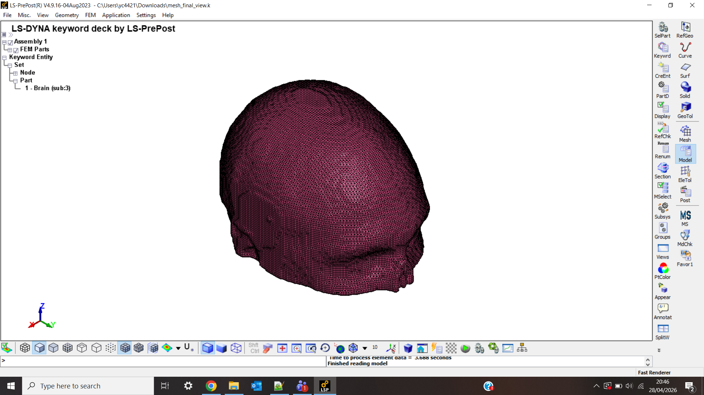
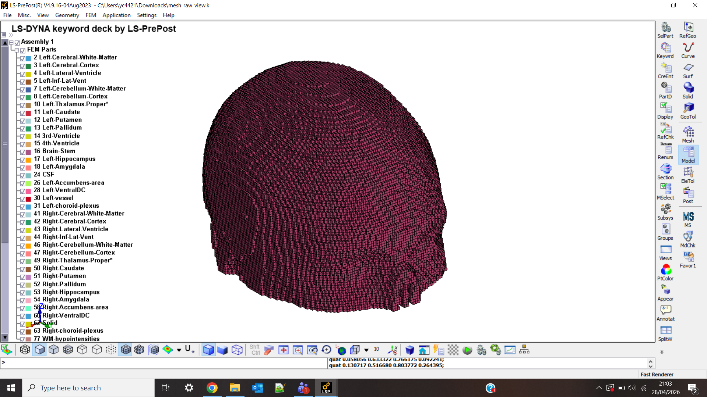
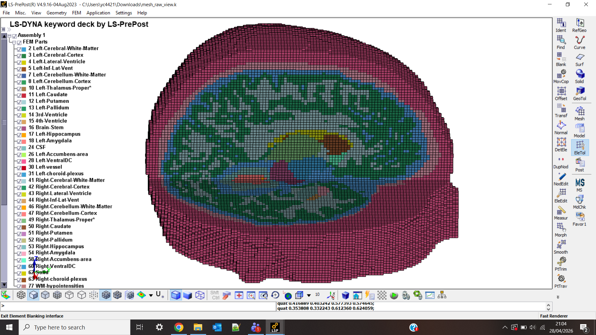
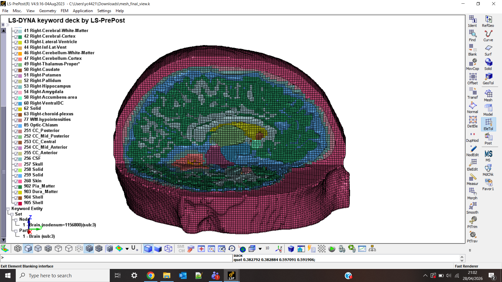
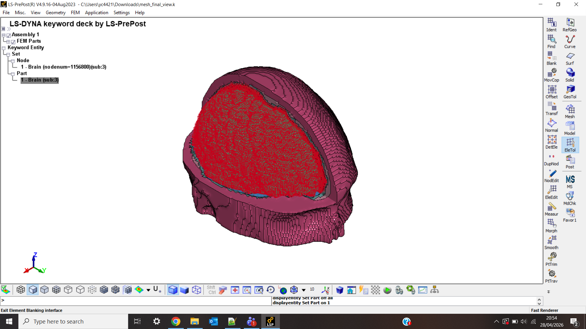

Mesh Inspection: Checking Mesh Outputs Before Simulation
Overview
After generating the brain mesh, it is useful to inspect it in LS-PrePost before using it for simulation.
In this step, we will:
- prepare a visualisation keyword file;
- open the mesh in LS-PrePost;
- compare the raw, smoothed, and revised meshes;
- inspect the part and set definitions.
The main mesh files are:
mesh.k: Raw voxel-based meshmesh_smoothed.k: Mesh after smoothingmesh_smoothed_revised.k: Final mesh after brain–skull contact correction
Additional files used for visualisation:
part_list_full.k: Reusable part definitionsset_list.k: Subject-specific set definitions
1. Preparing the visualisation files
Create a dedicated visualisation folder for the subject:
SUBJECT="sub0045"
mkdir -p data/subjects/${SUBJECT}/visualise
Copy the mesh files and subject-specific set list into this folder:
cp data/subjects/${SUBJECT}/output/mesh.k \
data/subjects/${SUBJECT}/output/mesh_smoothed.k \
data/subjects/${SUBJECT}/output/mesh_smoothed_revised.k \
data/subjects/${SUBJECT}/output/set_list.k \
data/subjects/${SUBJECT}/visualise/
The set_list.k file is subject-specific because the node and element sets depend on the generated geometry.
The reusable part list is provided in:
src/dependencies/rs/part_list_full.k
Create a wrapper keyword file in the visualisation folder:
touch data/subjects/${SUBJECT}/visualise/visualise_mesh.k
Add the following content to visualise_mesh.k:
*KEYWORD
*INCLUDE
mesh_smoothed_revised.k
*INCLUDE
set_list.k
*INCLUDE
../../../../src/dependencies/rs/part_list_full.k
*END
This wrapper file allows LS-PrePost to load the final mesh together with the part and set definitions.
2. Opening the mesh in LS-PrePost
Open LS-PrePost and load the wrapper file:
File → Open → Keyword
Select:
visualise_mesh.k
After loading, the mesh should appear in the main graphics window.
Useful controls:
| Action | Control |
|---|---|
| Rotate | Left mouse drag |
| Pan | Middle mouse drag |
| Zoom | Scroll wheel |
| Fit model to screen | Ctrl + F |
The main LS-PrePost areas used here are:
- the graphics window, where the mesh is displayed;
- the part display panel, where individual parts can be shown or hidden;
- the message/command window, where loading warnings may appear.

3. Comparing mesh stages
It is helpful to compare the raw, smoothed, and revised meshes to understand what each processing step has changed.
You can either edit visualise_mesh.k to include a different mesh file, or create separate wrapper files for each stage.
For example:
*KEYWORD
*INCLUDE
mesh.k
*INCLUDE
set_list.k
*INCLUDE
../../../../src/dependencies/rs/part_list_full.k
*END
for the raw mesh.
Raw mesh: mesh.k
The raw mesh is generated directly from the voxel-based pipeline.
Check for:
- overall brain-like geometry;
- both hemispheres present;
- no obvious missing regions;
- expected blocky or stair-step surface.


Smoothed mesh: mesh_smoothed.k
The smoothed mesh should have a cleaner surface.
Check for:
- reduced jagged edges;
- smoother outer surface;
- no excessive shrinkage;
- no obvious surface folding or distortion.

Revised mesh: mesh_smoothed_revised.k
The revised mesh is the final mesh after brain–skull contact correction.
Check for:
- smooth final geometry;
- no obvious brain–skull intersections;
- no visible penetrations or overlapping regions;
- no unexpected holes or gaps.
4. Inspecting parts and sets
The wrapper file also loads:
part_list_full.k
set_list.k
These make the mesh easier to inspect in LS-PrePost.
Part list
The part list defines the model parts and allows LS-PrePost to display them by part ID or colour.
Use the part display panel to show, hide, or isolate different parts.
Set list
The set_list.k file contains collections of nodes or elements grouped into sets. These are generated during mesh creation and are specific to each subject.
In LS-PrePost, you will typically see two main types:
- A node set is a group of mesh nodes (points in space). In the interface, these appear under:
Set → Part - They are closely related to the
part_list_full.kdefinitions.
What they are used for: - isolating anatomical regions; - assigning material properties; - controlling visibility in LS-PrePost.

Summary
The final revised mesh should have:
- a plausible brain shape;
- both hemispheres and inferior regions present;
- smooth surface geometry;
- no obvious holes or missing regions;
- no visible brain–skull intersections;
- correctly loaded part and set definitions.
Once these checks look reasonable, the mesh is ready for the simulation setup steps.